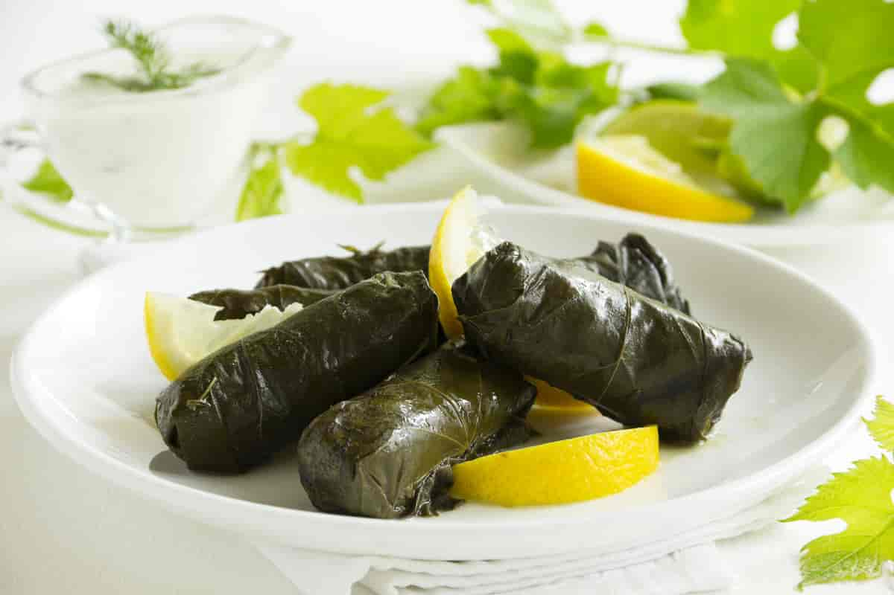

This recipe is from a website called "www.themediterraneandish.com," written by Suzy Karadsheh,
and can be found on this link.

Photo by: Lesya Dolyk,
https://creativecommons.org/licenses/by-sa/2.0/deed.no, via Large Norwegian Encyclopedia
Rate This Recipe
Conversion
=
Ingredients
1 16-oz jar grape leaves in brine (about 60 to 70 leaves)
1 ½ cup short grain rice, soaked in plenty of water for 15 minutes, then drained
Extra virgin olive oil (I used Private Reserve Greek EVOO)
1 large yellow onion, finely chopped
12 oz lean ground beef
Kosher salt
Black pepper
1 tsp allspice
½ tsp cumin
½ cup EACH chopped fresh parsley, fresh dill, and fresh mint
1 to 2 tomatoes sliced into rounds
About 4 cups or more low-sodium chicken broth or water
Juice of 2 lemons
Directions
If using jarred grape leaves as I am here, remove them from the jar and discard the brine. Rinse the grape
leaves well and place them in a colander to drain. (Later in the process, you'll remove the stems before
stuffing.) (See notes if using fresh grape leaves)
Soak the rice in plenty of water for about 15 to 20 minutes or until you are able to break one grain of rice
easily. Drain well.
While the rice is soaking, cook the meat. Heat 1 tablespoon extra virgin olive oil in a large skillet. Add
onions and cook briefly, about 2 minutes or so, tossing until translucent. Add the meat and cook till fully
browned, tossing occasionally. Drain any excess fat, then season the meat with kosher salt, pepper, and
spices. Toss to combine. Remove from heat and set aside to cool.
In a mixing bowl, combine the meat, drained rice, and fresh herbs. Season lightly with kosher salt. Add a
generous drizzle of extra virgin olive oil, and mix so that everything is well-incorporated.
Prepare a heavy cooking pot and lightly brush the bottom with extra virgin olive oil. Arrange a few grape
leaves in the bottom (I used the leaves that didn't look too great here and made three layers to protect the
stuffed leaves from scorching later.) Top with sliced tomatoes.
To stuff the grape leaves, you will work one leaf at a time. Place one grape leave on a cutting board the
textured/rough side facing you. Take 1 heaping teaspoon of the filling and place in the center of the leave,
then fold the sides over the filling and roll (think about this like rolling spring rolls or cigars.) Repeat
with the remaining grape leaves or until you're out of stuffing.
Neatly arrange the grape leaves in row, seam side down, in your prepared pot, covering the circumference of
the pot. Then place a small plate inverted on top. Boil the broth or water and pour over the grape leaves,
arriving at the top layer and somewhat covering (about 4 cups liquid, maybe a little more.)
Now cover the pot with the lid and cook over medium heat for 30 minutes until the liquid has been absorbed.
Uncover and remove the plate, then pour juice of 2 lemons. Cover again with the lid (no need for the plate at
this point), cook on low heat for 30 to 45 more minutes or until fully cooked.